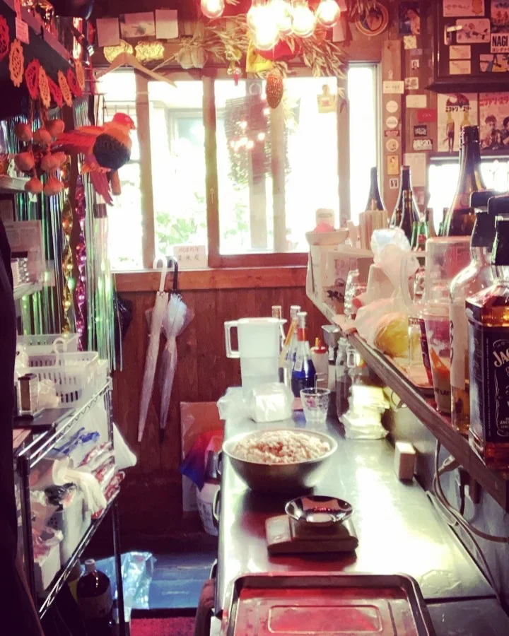

2020年6月28日
#シウマイ を巻く

#シウマイ を巻く #猫背でもシイウイ巻ける #冷凍食品ではない #クラフト・シウマイ #息子のシウマイ #ぜひともお待ちしております #おいしいよ #中華バル #中華 #中華料理 #福島グルメ #路地裏 #B級グルメ #中国 #チャイニーズ #路地裏チャイニーズ有馬 #フォローミー #summer #インテリア
2020年6月28日

#シウマイ を巻く #猫背でもシイウイ巻ける #冷凍食品ではない #クラフト・シウマイ #息子のシウマイ #ぜひともお待ちしております #おいしいよ #中華バル #中華 #中華料理 #福島グルメ #路地裏 #B級グルメ #中国 #チャイニーズ #路地裏チャイニーズ有馬 #フォローミー #summer #インテリア